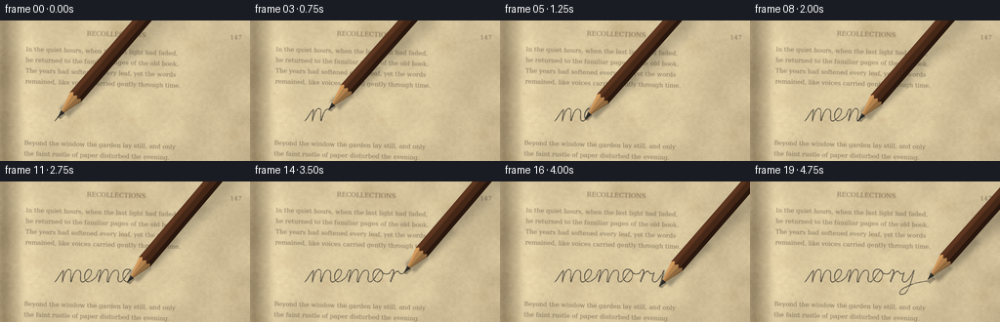
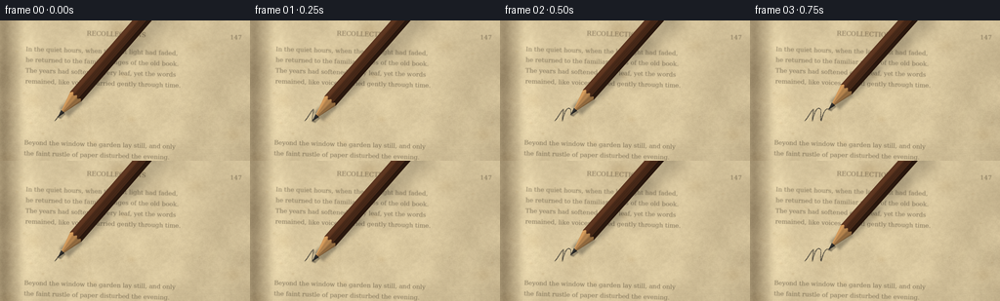

CODING AGENTS AS PIXEL WORLD MODELS
traex/GPT-6.1-Sol · mechanics_0049
点击播放 · 原生 RGB 像素
逐轮保存的候选
回放视频、检查图与代码变化。
每份候选均可单独播放。实际图片检查记录在下方工具轨迹中。
候选 01播放与检查图
点击播放 · 原生 RGB 像素


展开代码变化
--- 上一保存版本
+++ 本次保存版本
@@ -0,0 +1,235 @@
+"""Procedural macro shot of graphite being written on an old, fibrous book page."""
+from pathlib import Path
+import json
+import math
+import numpy as np
+from PIL import Image, ImageDraw, ImageFont, ImageFilter
+import artifact_io
+
+ROOT = Path(__file__).resolve().parent
+SPEC = json.loads((ROOT / 'task_spec.json').read_text())
+W, H, N = SPEC['width'], SPEC['height'], SPEC['frames']
+S = 4
+SW, SH = W*S, H*S
+rng = np.random.default_rng(4927)
+y, x = np.mgrid[0:SH, 0:SW].astype(np.float32)
+x /= S; y /= S
+
+def noise_grid(w, h):
+ a = rng.random((h,w)).astype(np.float32)
+ return np.array(Image.fromarray(a, 'F').resize((SW,SH), Image.Resampling.BICUBIC)) - .5
+
+# The page has both broad age stains and fine, raised rag-paper grain.
+broad = noise_grid(12,8)
+medium = noise_grid(85,48)
+fine = noise_grid(W,H)
+micro = rng.normal(0,1,(SH,SW)).astype(np.float32)
+light = 9 - .035*x - .024*y - 8*((x-115)/220)**2
+binding = -56*np.exp(-((x-4)/10)**2) - 12*np.exp(-((x-17)/5)**2) + 11*np.exp(-((x-28)/12)**2)
+tone = light + binding + broad*16 + medium*7 + fine*7 + micro*1.1
+rgb = np.zeros((SH,SW,3),np.float32)
+for c,base in enumerate([215,197,157]):
+ rgb[:,:,c] = base + tone*(1 if c!=2 else .87)
+# Faded foxing and mild pressure stains, fixed on the page rather than flickering.
+for k in range(80):
+ cx = rng.uniform(6,260); cy=rng.uniform(-5,150)
+ rad = rng.uniform(.25,1.2) if k<65 else rng.uniform(2,7)
+ stain=np.exp(-((x-cx)**2/(rad**2)+(y-cy)**2/(rad*.7)**2)/2)*rng.uniform(2,12)
+ rgb -= stain[:,:,None]*np.array([.65,.9,1.1])
+page=Image.fromarray(np.clip(rgb,0,255).astype(np.uint8))
+# Small rag fibres, many with paired highlight and shadow, give the contact area a tooth.
+fibres=Image.new('RGBA',(SW,SH)); d=ImageDraw.Draw(fibres)
+for k in range(3800):
+ px=rng.uniform(0,W); py=rng.uniform(0,H)
+ ang=rng.uniform(-.65,.65) if k%3 else rng.uniform(0,math.tau)
+ length=rng.uniform(.35,3.5)
+ dx=math.cos(ang)*length; dy=math.sin(ang)*length
+ alpha=int(rng.uniform(7,25))
+ col=(113,91,56,alpha) if k%2 else (254,242,208,alpha)
+ d.line([(px*S,py*S),((px+dx)*S,(py+dy)*S)],fill=col,width=1)
+ if k%7==0:
+ d.line([(px*S,(py+.23)*S),((px+dx)*S,(py+dy+.23)*S)],fill=(254,244,220,18),width=1)
+page=Image.alpha_composite(page.convert('RGBA'),fibres).convert('RGB')
+# Very shallow wrinkles in the lower page, lit on one lip.
+wrinkle=Image.new('RGBA',(SW,SH)); wd=ImageDraw.Draw(wrinkle)
+for j in range(5):
+ pts=[]
+ for xx in np.linspace(14,260,160):
+ yy=130+j*3.6+math.sin(xx*.024+j)*1.3 - xx*.028
+ pts.append((xx*S, yy*S))
+ wd.line(pts,fill=(98,78,43,9),width=2)
+ wd.line([(a,b-2) for a,b in pts],fill=(255,245,217,13),width=2)
+page=Image.alpha_composite(page.convert('RGBA'),wrinkle).convert('RGB')
+
+# Letterpress text follows the slightly angled book page. All copy is generated here.
+text=Image.new('RGBA',(SW,SH)); td=ImageDraw.Draw(text)
+serif='/usr/share/fonts/truetype/dejavu/DejaVuSerif.ttf'
+italic='/usr/share/fonts/truetype/dejavu/DejaVuSerif-Italic.ttf'
+font=ImageFont.truetype(serif, int(6.3*S))
+titlefont=ImageFont.truetype(serif,int(6.6*S))
+lines=[
+ (26,28,'In the quiet hours, when the last light had faded,'),
+ (26,39,'he returned to the familiar pages of the old book.'),
+ (26,50,'The years had softened every leaf, yet the words'),
+ (26,61,'remained, like voices carried gently through time.'),
+ (26,124,'Beyond the window the garden lay still, and only'),
+ (26,135,'the faint rustle of paper disturbed the evening.'),
+ (26,146,'He paused, remembering what had once been.')]
+ink=(77,66,47,170)
+for tx,ty,t in lines:
+ td.text((tx*S,ty*S),t,font=font,fill=ink)
+td.text((88*S,10*S),'RECOLLECTIONS',font=titlefont,fill=(72,58,39,177))
+td.text((235*S,10*S),'147',font=font,fill=ink)
+# Slight skew, as a real book is rarely perfectly aligned to the frame.
+text=text.transform((SW,SH),Image.Transform.AFFINE,(1,.018,-1*S,-.028,1,3.3*S),resample=Image.Resampling.BICUBIC)
+# Printed ink breaks slightly over peaks in the paper grain.
+ta=np.asarray(text).copy()
+ta[:,:,3]=(ta[:,:,3].astype(float)*(0.88+.12*(fine+.5))).astype(np.uint8)
+text=Image.fromarray(ta)
+page=Image.alpha_composite(page.convert('RGBA'),text).convert('RGB')
+# Optical focus falls gently away from the pencil tip plane.
+sharp=np.asarray(page).astype(np.float32)
+blur=np.asarray(page.filter(ImageFilter.GaussianBlur(.48*S))).astype(np.float32)
+defocus=np.clip(np.abs(y-96)/100,0,.65)
+background=sharp*(1-defocus[:,:,None])+blur*defocus[:,:,None]
+
+# Hand-drawn cubic cursive "memory": one uninterrupted graphite stroke.
+segments=[]
+cur=np.array([56.,103.])
+def curve(c1,c2,end):
+ global cur
+ ts=np.linspace(0,1,54)[:,None]
+ p=(1-ts)**3*cur+3*(1-ts)**2*ts*np.array(c1)+3*(1-ts)*ts**2*np.array(c2)+ts**3*np.array(end)
+ segments.append(p[1:]);cur=np.array(end,dtype=float)
+# m
+curve((58,102),(62,94),(65,91))
+curve((66,89),(63,102),(64,103))
+curve((66,94),(69,88),(72,91))
+curve((74,92),(71,101),(73,103))
+curve((76,91),(79,89),(82,92))
+curve((84,95),(80,103),(85,103))
+# e
+curve((88,102),(96,95),(93,91))
+curve((90,88),(85,95),(87,100))
+curve((89,106),(96,101),(99,97))
+# m
+curve((100,94),(101,90),(103,91))
+curve((104,92),(100,102),(101,103))
+curve((104,94),(107,88),(110,91))
+curve((113,95),(107,103),(111,103))
+curve((114,91),(119,89),(121,92))
+curve((123,95),(118,102),(123,103))
+# o
+curve((127,102),(130,94),(134,91))
+curve((127,87),(124,96),(127,101))
+curve((133,108),(139,94),(134,91))
+curve((135,94),(139,96),(143,94))
+# r
+curve((144,92),(146,89),(147,91))
+curve((148,94),(143,101),(144,103))
+curve((146,99),(148,91),(152,92))
+curve((154,96),(157,95),(158,93))
+# y with descender
+curve((157,96),(154,103),(158,103))
+curve((161,104),(166,95),(168,91))
+curve((166,99),(163,112),(158,115))
+curve((151,118),(152,111),(160,108))
+curve((165,105),(173,103),(182,102))
+path=np.vstack([np.array([[56.,103.]]),*segments])
+dist=np.r_[0,np.cumsum(np.linalg.norm(np.diff(path,axis=0),axis=1))]
+
+# Graphite deposit is dark but granular; the fixed surface prevents the marks swimming.
+mark_grain=np.clip(.85 + fine*.6 + medium*.18 + micro*.11,.33,1.14)
+
+def poly_mask(points):
+ im=Image.new('L',(SW,SH),0)
+ ImageDraw.Draw(im).polygon([(float(a*S),float(b*S)) for a,b in points],fill=255)
+ return im
+
+def draw_pencil(frame, tip, i, lift=0):
+ # Axis points back toward the writer, outside the upper right crop.
+ angle=math.radians(-49 + .7*math.sin(i*.4))
+ axis=np.array([math.cos(angle),math.sin(angle)])
+ norm=np.array([-axis[1],axis[0]])
+ tip=np.asarray(tip,dtype=float)+np.array([0,-lift])
+ def pt(ss,uu): return tip+axis*ss+norm*uu
+ xx=x-tip[0]; yy=y-tip[1]
+ ss=xx*axis[0]+yy*axis[1]
+ uu=xx*norm[0]+yy*norm[1]
+ # Area shadows are displaced progressively as the barrel rises from the page.
+ shadow=np.zeros((SH,SW),np.float32)
+ for a,b,half,blur_rad,opacity in [(0,7,2,.35,.28),(7,27,6.5,1.3,.28),(27,67,7.5,2.8,.25),(67,112,7.5,4.7,.20),(112,255,7.5,6.5,.17)]:
+ points=[]
+ for s,u in [(a,-half),(b,-half),(b,half),(a,half)]:
+ points.append(pt(s,u)+np.array([1+s*.055,1.1+s*.055+lift*1.3]))
+ sm=np.asarray(poly_mask(points).filter(ImageFilter.GaussianBlur(blur_rad*S)),dtype=np.float32)/255
+ shadow+=sm*opacity
+ contact=np.exp(-((x-tip[0]-.6)**2/1.9+(y-tip[1]-.5)**2/.85))*max(0,.32-lift*.11)
+ shadow=np.clip(shadow+contact,0,.42)
+ frame=frame*(1-shadow[:,:,None])
+ # Hexagonal lacquered barrel, with distinct longitudinal facets.
+ radius=7.7
+ boundary=28 + 1.15*np.cos(uu/radius*math.pi*3) + .18*np.sin(uu*8)
+ wood_mask=(ss>=5.7)&(ss<boundary)&(np.abs(uu)<radius*np.clip((ss-1.0)/27,0,1))
+ barrel_mask=(ss>=boundary)&(np.abs(uu)<=radius)
+ graphite_mask=(ss>=-.25)&(ss<7.2)&(np.abs(uu)<.25+ss*.28)
+ col=np.zeros_like(frame)
+ facet=np.where(uu<-2.65,1.18,np.where(uu<3.2,.91,.54))
+ shade=facet+.10*np.exp(-((uu+4.7)/.45)**2) + .035*np.sin(uu*2.7)
+ grain=(np.sin(uu*10 + np.sin(ss*.035))+.5*np.sin(uu*31+ss*.009))*1.5
+ for c,base in enumerate([77,44,26]):
+ col[:,:,c]=base*shade+grain+np.sin(ss*.14+uu*.3)*.65
+ # Thin natural highlights along the lacquer edges; not a flat graphic silhouette.
+ hi=np.exp(-((uu+5.45)/.24)**2)*12
+ col+=hi[:,:,None]*np.array([1,.85,.60])
+ barrel_alpha=np.clip((radius-np.abs(uu))*S,0,1)*barrel_mask
+ frame=frame*(1-barrel_alpha[:,:,None])+col*barrel_alpha[:,:,None]
+ # Sharpened cedar cone, including narrow, irregular longitudinal wood fibres.
+ radial=np.clip(uu/(radius*np.maximum((ss-1)/27,.06)),-1,1)
+ woodlight=1.03-.27*(radial+.3) + .065*np.cos(radial*9)
+ woodgrain=(np.sin(radial*49+ss*.17)+np.sin(radial*89+ss*.35)) * 3.1
+ for c,base in enumerate([179,131,78]):
+ col[:,:,c]=base*woodlight+woodgrain
+ # A few graphite-dark streaks within the exposed sharpening.
+ wc=(wood_mask.astype(np.float32))[:,:,None]
+ frame=frame*(1-wc)+np.clip(col,0,255)*wc
+ # Graphite point with a restrained silvery highlight.
+ gs=1-.12*uu+.07*np.sin(ss*2+uu*5)
+ for c,base in enumerate([43,42,39]): col[:,:,c]=base*gs
+ col+=np.exp(-((uu+.6)/.28)**2)[:,:,None]*14
+ gc=graphite_mask[:,:,None]
+ frame=np.where(gc,col,frame)
+ return frame
+
+frames=[]
+for i in range(N):
+ # All frames but the last are contact writing; the ending holds a completed word.
+ t=min(1,(i+.25)/(N-1.6))
+ target=dist[-1]*t
+ idx=int(np.searchsorted(dist,target))
+ idx=min(max(idx,1),len(path)-1)
+ f=(target-dist[idx-1])/(dist[idx]-dist[idx-1])
+ tip=path[idx-1]*(1-f)+path[idx]*f
+ visible=np.vstack([path[:idx],tip])
+ mark=Image.new('L',(SW,SH),0); md=ImageDraw.Draw(mark)
+ # Slight pressure changes through loops, with a fine graphite core.
+ for j in range(1,len(visible)):
+ p0,p1=visible[j-1],visible[j]
+ width=.72+.24*(.5+.5*math.sin(j*.067))
+ md.line([tuple(p0*S),tuple(p1*S)],fill=215,width=max(2,round(width*S)))
+ ma=np.asarray(mark,dtype=np.float32)/255*mark_grain
+ ma=np.clip(ma,0,.91)
+ # A tiny amount of rubbed graphite at the teeth of the page.
+ halo=np.asarray(mark.filter(ImageFilter.GaussianBlur(.24*S)),dtype=np.float32)/255*.08
+ frame=background.copy()*(1-halo[:,:,None])
+ graphite=np.array([54,52,46],dtype=np.float32)
+ frame=frame*(1-ma[:,:,None])+graphite*ma[:,:,None]
+ lift=1.8 if i==N-1 else 0
+ frame=draw_pencil(frame,tip,i,lift)
+ # Mild lens vignette and warm macro illumination.
+ vig=1-.045*((x-126)/170)**2-.030*((y-77)/110)**2
+ frame*=vig[:,:,None]
+ final=Image.fromarray(np.clip(frame,0,255).astype(np.uint8)).resize((W,H),Image.Resampling.LANCZOS)
+ frames.append(np.asarray(final))
+artifact_io.save(np.stack(frames).astype(np.uint8),ROOT)
+print(f'Saved {len(frames)} RGB frames at {W}x{H}, {SPEC["fps"]} fps.')
可观测工具轨迹
实际执行的命令与返回图片。
命令 1exit 0
/bin/bash -lc 'ls -la && cat prompt.txt && cat GENERATION_RULES.md && cat task_spec.json'
命令 2exit 0
/bin/bash -lc 'cat artifact_io.py && fc-list | head -20'
命令 3exit 0
/bin/bash -lc "cat > generate.py <<'PY'
\"\"\"Procedural macro shot of graphite being written on an old, fibrous book page.\"\"\"
from pathlib import Path
import json
import math
import numpy as np
from PIL import Image, ImageDraw, ImageFont, ImageFilter
import artifact_io
ROOT = Path(__file__).resolve().parent
SPEC = json.loads((ROOT / 'task_spec.json').read_text())
W, H, N = SPEC['width'], SPEC['height'], SPEC['frames']
S = 4
SW, SH = W*S, H*S
rng = np.random.default_rng(4927)
y, x = np.mgrid[0:SH, 0:SW].astype(np.float32)
x /= S; y /= S
def noise_grid(w, h):
a = rng.random((h,w)).astype(np.float32)
return np.array(Image.fromarray(a, 'F').resize((SW,SH), Image.Resampling.BICUBIC)) - .5
# The page has both broad age stains and fine, raised rag-paper grain.
broad = noise_grid(12,8)
medium = noise_grid(85,48)
fine = noise_grid(W,H)
micro = rng.normal(0,1,(SH,SW)).astype(np.float32)
light = 9 - .035*x - .024*y - 8*((x-115)/220)**2
binding = -56*np.exp(-((x-4)/10)**2) - 12*np.exp(-((x-17)/5)**2) + 11*np.exp(-((x-28)/12)**2)
tone = light + binding + broad*16 + medium*7 + fine*7 + micro*1.1
rgb = np.zeros((SH,SW,3),np.float32)
for c,base in enumerate([215,197,157]):
rgb[:,:,c] = base + tone*(1 if c"'!=2 else .87)
# Faded foxing and mild pressure stains, fixed on the page rather than flickering.
for k in range(80):
cx = rng.uniform(6,260); cy=rng.uniform(-5,150)
rad = rng.uniform(.25,1.2) if k<65 else rng.uniform(2,7)
stain=np.exp(-((x-cx)**2/(rad**2)+(y-cy)**2/(rad*.7)**2)/2)*rng.uniform(2,12)
rgb -= stain[:,:,None]*np.array([.65,.9,1.1])
page=Image.fromarray(np.clip(rgb,0,255).astype(np.uint8))
# Small rag fibres, many with paired highlight and shadow, give the contact area a tooth.
fibres=Image.new('"'RGBA',(SW,SH)); d=ImageDraw.Draw(fibres)
for k in range(3800):
px=rng.uniform(0,W); py=rng.uniform(0,H)
ang=rng.uniform(-.65,.65) if k%3 else rng.uniform(0,math.tau)
length=rng.uniform(.35,3.5)
dx=math.cos(ang)*length; dy=math.sin(ang)*length
alpha=int(rng.uniform(7,25))
col=(113,91,56,alpha) if k%2 else (254,242,208,alpha)
d.line([(px*S,py*S),((px+dx)*S,(py+dy)*S)],fill=col,width=1)
if k%7==0:
d.line([(px*S,(py+.23)*S),((px+dx)*S,(py+dy+.23)*S)],fill=(254,244,220,18),width=1)
page=Image.alpha_composite(page.convert('RGBA'),fibres).convert('RGB')
# Very shallow wrinkles in the lower page, lit on one lip.
wrinkle=Image.new('RGBA',(SW,SH)); wd=ImageDraw.Draw(wrinkle)
for j in range(5):
pts=[]
for xx in np.linspace(14,260,160):
yy=130+j*3.6+math.sin(xx*.024+j)*1.3 - xx*.028
pts.append((xx*S, yy*S))
wd.line(pts,fill=(98,78,43,9),width=2)
wd.line([(a,b-2) for a,b in pts],fill=(255,245,217,13),width=2)
page=Image.alpha_composite(page.convert('RGBA'),wrinkle).convert('RGB')
# Letterpress text follows the slightly angled book page. All copy is generated here.
text=Image.new('RGBA',(SW,SH)); td=ImageDraw.Draw(text)
serif='/usr/share/fonts/truetype/dejavu/DejaVuSerif.ttf'
italic='/usr/share/fonts/truetype/dejavu/DejaVuSerif-Italic.ttf'
font=ImageFont.truetype(serif, int(6.3*S))
titlefont=ImageFont.truetype(serif,int(6.6*S))
lines=[
(26,28,'In the quiet hours, when the last light had faded,'),
(26,39,'he returned to the familiar pages of the old book.'),
(26,50,'The years had softened every leaf, yet the words'),
(26,61,'remained, like voices carried gently through time.'),
(26,124,'Beyond the window the garden lay still, and only'),
(26,135,'the faint rustle of paper disturbed the evening.'),
(26,146,'He paused, remembering what had once been.')]
ink=(77,66,47,170)
for tx,ty,t in lines:
td.text((tx*S,ty*S),t,font=font,fill=ink)
td.text((88*S,10*S),'RECOLLECTIONS',font=titlefont,fill=(72,58,39,177))
td.text((235*S,10*S),'147',font=font,fill=ink)
# Slight skew, as a real book is rarely perfectly aligned to the frame.
text=text.transform((SW,SH),Image.Transform.AFFINE,(1,.018,-1*S,-.028,1,3.3*S),resample=Image.Resampling.BICUBIC)
# Printed ink breaks slightly over peaks in the paper grain.
ta=np.asarray(text).copy()
ta[:,:,3]=(ta[:,:,3].astype(float)*(0.88+.12*(fine+.5))).astype(np.uint8)
text=Image.fromarray(ta)
page=Image.alpha_composite(page.convert('RGBA'),text).convert('RGB')
# Optical focus falls gently away from the pencil tip plane.
sharp=np.asarray(page).astype(np.float32)
blur=np.asarray(page.filter(ImageFilter.GaussianBlur(.48*S))).astype(np.float32)
defocus=np.clip(np.abs(y-96)/100,0,.65)
background=sharp*(1-defocus[:,:,None])+blur*defocus[:,:,None]
# Hand-drawn cubic cursive \"memory\": one uninterrupted graphite stroke.
segments=[]
cur=np.array([56.,103.])
def curve(c1,c2,end):
global cur
ts=np.linspace(0,1,54)[:,None]
p=(1-ts)**3*cur+3*(1-ts)**2*ts*np.array(c1)+3*(1-ts)*ts**2*np.array(c2)+ts**3*np.array(end)
segments.append(p[1:]);cur=np.array(end,dtype=float)
# m
curve((58,102),(62,94),(65,91))
curve((66,89),(63,102),(64,103))
curve((66,94),(69,88),(72,91))
curve((74,92),(71,101),(73,103))
curve((76,91),(79,89),(82,92))
curve((84,95),(80,103),(85,103))
# e
curve((88,102),(96,95),(93,91))
curve((90,88),(85,95),(87,100))
curve((89,106),(96,101),(99,97))
# m
curve((100,94),(101,90),(103,91))
curve((104,92),(100,102),(101,103))
curve((104,94),(107,88),(110,91))
curve((113,95),(107,103),(111,103))
curve((114,91),(119,89),(121,92))
curve((123,95),(118,102),(123,103))
# o
curve((127,102),(130,94),(134,91))
curve((127,87),(124,96),(127,101))
curve((133,108),(139,94),(134,91))
curve((135,94),(139,96),(143,94))
# r
curve((144,92),(146,89),(147,91))
curve((148,94),(143,101),(144,103))
curve((146,99),(148,91),(152,92))
curve((154,96),(157,95),(158,93))
# y with descender
curve((157,96),(154,103),(158,103))
curve((161,104),(166,95),(168,91))
curve((166,99),(163,112),(158,115))
curve((151,118),(152,111),(160,108))
curve((165,105),(173,103),(182,102))
path=np.vstack([np.array([[56.,103.]]),*segments])
dist=np.r_[0,np.cumsum(np.linalg.norm(np.diff(path,axis=0),axis=1))]
# Graphite deposit is dark but granular; the fixed surface prevents the marks swimming.
mark_grain=np.clip(.85 + fine*.6 + medium*.18 + micro*.11,.33,1.14)
def poly_mask(points):
im=Image.new('L',(SW,SH),0)
ImageDraw.Draw(im).polygon([(float(a*S),float(b*S)) for a,b in points],fill=255)
return im
def draw_pencil(frame, tip, i, lift=0):
# Axis points back toward the writer, outside the upper right crop.
angle=math.radians(-49 + .7*math.sin(i*.4))
axis=np.array([math.cos(angle),math.sin(angle)])
norm=np.array([-axis[1],axis[0]])
tip=np.asarray(tip,dtype=float)+np.array([0,-lift])
def pt(ss,uu): return tip+axis*ss+norm*uu
xx=x-tip[0]; yy=y-tip[1]
ss=xx*axis[0]+yy*axis[1]
uu=xx*norm[0]+yy*norm[1]
# Area shadows are displaced progressively as the barrel rises from the page.
shadow=np.zeros((SH,SW),np.float32)
for a,b,half,blur_rad,opacity in [(0,7,2,.35,.28),(7,27,6.5,1.3,.28),(27,67,7.5,2.8,.25),(67,112,7.5,4.7,.20),(112,255,7.5,6.5,.17)]:
points=[]
for s,u in [(a,-half),(b,-half),(b,half),(a,half)]:
points.append(pt(s,u)+np.array([1+s*.055,1.1+s*.055+lift*1.3]))
sm=np.asarray(poly_mask(points).filter(ImageFilter.GaussianBlur(blur_rad*S)),dtype=np.float32)/255
shadow+=sm*opacity
contact=np.exp(-((x-tip[0]-.6)**2/1.9+(y-tip[1]-.5)**2/.85))*max(0,.32-lift*.11)
shadow=np.clip(shadow+contact,0,.42)
frame=frame*(1-shadow[:,:,None])
# Hexagonal lacquered barrel, with distinct longitudinal facets.
radius=7.7
boundary=28 + 1.15*np.cos(uu/radius*math.pi*3) + .18*np.sin(uu*8)
wood_mask=(ss>=5.7)&(ss<boundary)&(np.abs(uu)<radius*np.clip((ss-1.0)/27,0,1))
barrel_mask=(ss>=boundary)&(np.abs(uu)<=radius)
graphite_mask=(ss>=-.25)&(ss<7.2)&(np.abs(uu)<.25+ss*.28)
col=np.zeros_like(frame)
facet=np.where(uu<-2.65,1.18,np.where(uu<3.2,.91,.54))
shade=facet+.10*np.exp(-((uu+4.7)/.45)**2) + .035*np.sin(uu*2.7)
grain=(np.sin(uu*10 + np.sin(ss*.035))+.5*np.sin(uu*31+ss*.009))*1.5
for c,base in enumerate([77,44,26]):
col[:,:,c]=base*shade+grain+np.sin(ss*.14+uu*.3)*.65
# Thin natural highlights along the lacquer edges; not a flat graphic silhouette.
hi=np.exp(-((uu+5.45)/.24)**2)*12
col+=hi[:,:,None]*np.array([1,.85,.60])
barrel_alpha=np.clip((radius-np.abs(uu))*S,0,1)*barrel_mask
frame=frame*(1-barrel_alpha[:,:,None])+col*barrel_alpha[:,:,None]
# Sharpened cedar cone, including narrow, irregular longitudinal wood fibres.
radial=np.clip(uu/(radius*np.maximum((ss-1)/27,.06)),-1,1)
woodlight=1.03-.27*(radial+.3) + .065*np.cos(radial*9)
woodgrain=(np.sin(radial*49+ss*.17)+np.sin(radial*89+ss*.35)) * 3.1
for c,base in enumerate([179,131,78]):
col[:,:,c]=base*woodlight+woodgrain
# A few graphite-dark streaks within the exposed sharpening.
wc=(wood_mask.astype(np.float32))[:,:,None]
frame=frame*(1-wc)+np.clip(col,0,255)*wc
# Graphite point with a restrained silvery highlight.
gs=1-.12*uu+.07*np.sin(ss*2+uu*5)
for c,base in enumerate([43,42,39]): col[:,:,c]=base*gs
col+=np.exp(-((uu+.6)/.28)**2)[:,:,None]*14
gc=graphite_mask[:,:,None]
frame=np.where(gc,col,frame)
return frame
frames=[]
for i in range(N):
# All frames but the last are contact writing; the ending holds a completed word.
t=min(1,(i+.25)/(N-1.6))
target=dist[-1]*t
idx=int(np.searchsorted(dist,target))
idx=min(max(idx,1),len(path)-1)
f=(target-dist[idx-1])/(dist[idx]-dist[idx-1])
tip=path[idx-1]*(1-f)+path[idx]*f
visible=np.vstack([path[:idx],tip])
mark=Image.new('L',(SW,SH),0); md=ImageDraw.Draw(mark)
# Slight pressure changes through loops, with a fine graphite core.
for j in range(1,len(visible)):
p0,p1=visible[j-1],visible[j]
width=.72+.24*(.5+.5*math.sin(j*.067))
md.line([tuple(p0*S),tuple(p1*S)],fill=215,width=max(2,round(width*S)))
ma=np.asarray(mark,dtype=np.float32)/255*mark_grain
ma=np.clip(ma,0,.91)
# A tiny amount of rubbed graphite at the teeth of the page.
halo=np.asarray(mark.filter(ImageFilter.GaussianBlur(.24*S)),dtype=np.float32)/255*.08
frame=background.copy()*(1-halo[:,:,None])
graphite=np.array([54,52,46],dtype=np.float32)
frame=frame*(1-ma[:,:,None])+graphite*ma[:,:,None]
lift=1.8 if i==N-1 else 0
frame=draw_pencil(frame,tip,i,lift)
# Mild lens vignette and warm macro illumination.
vig=1-.045*((x-126)/170)**2-.030*((y-77)/110)**2
frame*=vig[:,:,None]
final=Image.fromarray(np.clip(frame,0,255).astype(np.uint8)).resize((W,H),Image.Resampling.LANCZOS)
frames.append(np.asarray(final))
artifact_io.save(np.stack(frames).astype(np.uint8),ROOT)
print(f'Saved {len(frames)} RGB frames at {W}x{H}, {SPEC[\"fps\"]} fps.')
PY
python generate.py"命令 4exit 0
/bin/bash -lc "python - <<'PY'
import numpy as np
from pathlib import Path
from PIL import Image
p=np.load('pixels.npz')['pixels']
assert p.shape == (144,256,20)
fs=sorted(Path('frames').glob('*.png'))
assert len(fs)==20
assert all(Image.open(f).mode=='RGB' and Image.open(f).size==(256,144) for f in fs)
assert Path('index.html').is_file()
print('Verified: 20 RGB frames, 256Ã144; pixels.npz and index.html exist.')
PY"保存候选 1 份；完成命令 4 次；可验证图片返回 0 张。原始 API 响应与完整日志保留在本地。